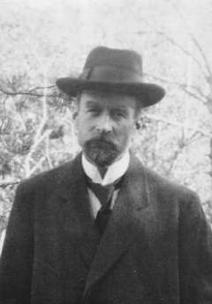

PhD encounters · interactive models
The Koch curve


In 1904 the Swedish mathematician Helge von Koch published a curve that is continuous everywhere and has a tangent nowhere. Such curves were known: Karl Weierstrass had written one down as a formula in 1872. Koch's complaint was that the formula “hides the geometric nature of the curve”. He wanted one you could draw. Take a segment, cut out its middle third, and put two sides of a triangle in the gap. Do the same to each of the four pieces, and keep going. After a few steps the picture stops changing, but the curve never stops getting longer.
D = log 4 / log 3 ≈ 1.2619four copies of itself, each one third of the size
Each step replaces every piece by four pieces a third as long, so the length grows by 4/3 every time, without limit. Three curves around a triangle make the Koch snowflake, an infinite perimeter around a finite area. In 1918 Felix Hausdorff found a way to assign such shapes a dimension, and the curve came out at 1.26, more than a line and less than a surface. Benoit Mandelbrot made it famous in 1967 by asking how long the coast of Britain is and answering that it depends on the ruler, exactly as it does here.
The curve after the chosen number of steps. Step 0 is the original segment.
How the number of pieces grows as they shrink. Both axes multiply by a fixed factor at each tick. The slope of the dots is the dimension.
What the values mean
- Steps
- How many times the rule has been applied. The real Koch curve is the limit after infinitely many steps. By step 7 the pieces are already smaller than a pixel.
- Pieces
- How many straight segments the drawing has: 4 to the power of the step for the curve, three times that for the snowflake.
- Length of each piece
- Every step divides the pieces by 3. At step 7 each one is 1/2187 of the original segment.
- Total length
- Pieces times their length, which is (4/3) to the power of the step. It never settles. After 100 steps the curve made from a 10 cm segment would be longer than the distance to the Moon.
- Dimension
- log(pieces) divided by log(magnification), that is log 4ⁿ / log 3ⁿ = log 4 / log 3 for every step after the first. The number does not change with the step. That is what makes it a property of the curve and not of the drawing.
- Area of the snowflake
- In units of the first triangle. Each step adds smaller and smaller triangles and the total approaches 8/5 = 1.6. An infinite perimeter encloses a finite area.
- Dots
- One dot per step: the magnification needed to see the pieces at their original size, against how many pieces there are. On logarithmic axes a power law is a straight line, and the slope of the line is the exponent. For the Koch curve the slope is 1.26.
- Slope 1
- What a straight line does. Magnify it by 3 and you need 3 copies to cover it. Dimension 1.
- Slope 2
- What a filled square does. Magnify it by 3 and you need 9 copies. Dimension 2. The Koch curve sits between the two.
- Shade the four copies
- Colours the four quarters of the curve in turn. Each quarter is the whole curve again, a third of the size. This is self-similarity, and it is why the dimension can be read off from a single step.
| Shape | Copies | Each scaled by | Dimension |
|---|---|---|---|
| Segment | 3 | 1/3 | log 3 / log 3 = 1 |
| Cantor dust | 2 | 1/3 | log 2 / log 3 = 0.631 |
| Koch curve | 4 | 1/3 | log 4 / log 3 = 1.262 |
| Coast of Britain | measured with rulers of different lengths | about 1.25 | |
| Sierpiński triangle | 3 | 1/2 | log 3 / log 2 = 1.585 |
| Filled square | 9 | 1/3 | log 9 / log 3 = 2 |
| Menger sponge | 20 | 1/3 | log 20 / log 3 = 2.727 |
| Cube | 27 | 1/3 | log 27 / log 3 = 3 |
Sources: H. von Koch, “Sur une courbe continue sans tangente, obtenue par une construction géométrique élémentaire”, Arkiv för Matematik, Astronomi och Fysik 1, 681–704 (1904). B. B. Mandelbrot, “How long is the coast of Britain? Statistical self-similarity and fractional dimension”, Science 156, 636–638 (1967). The code in this repository was generated with Claude (Anthropic).